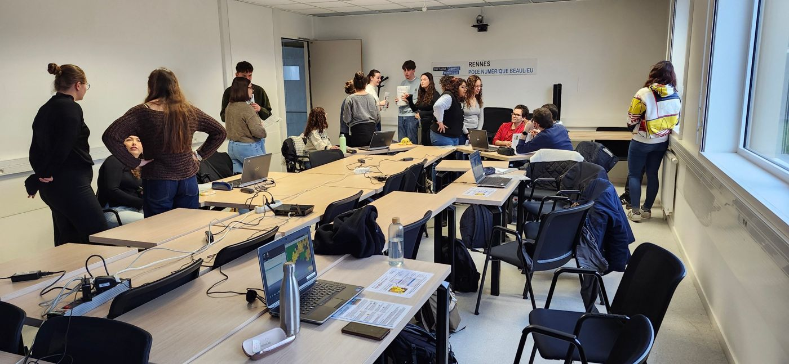

Responsibilities
- Director of the MSc “ERPUR” ↗Sustainable development strategies in urban and periurban areas
- MSc module coordinatorStudent individual project · Anthropized landscapes · Landscape ecology: urban and periurban areas
Workshops
- Introduction to R for ecologistsTwo-day workshop · University of Applied Sciences Western Switzerland, Geneva
- Introduction to Geographic Information Systems (GIS)One-day workshop · University of Applied Sciences Western Switzerland, Geneva
MSc modules
- Aquatic ecosystemsUniversity of Rennes
- BiomonitoringUniversity of Rennes
- Landscape ecologyUniversity of Rennes
- Landscape ecology in urban and periurban areasUniversity of Rennes
- Basic and applied statisticsUniversity of Rennes
- Geographic Information SystemUniversity of Rennes
- Urban nature: an ecological perspectiveUniversity of Applied Sciences Western Switzerland, Geneva
- Biodiversity and conservation: methods and principlesNational Museum of Natural History, Paris
- Managing habitats for wildlife: the French Garden Butterfly Observatory viewpointNational Museum of Natural History, Paris
BSc modules
- Aquatic ecology and ecosystemsUniversity of Rennes
- Bioindicators and ecological restorationUniversity of Rennes
- Geographic Information SystemUniversity of Rennes
- Experimental designUniversity of Rennes, Paimpont
- StatisticsUniversity of Rennes
Outreach
- Ecology awarenessPrimary education, Paris

Student supervision
PhD, post-doc, Master and Bachelor students are listed on the supervision page.